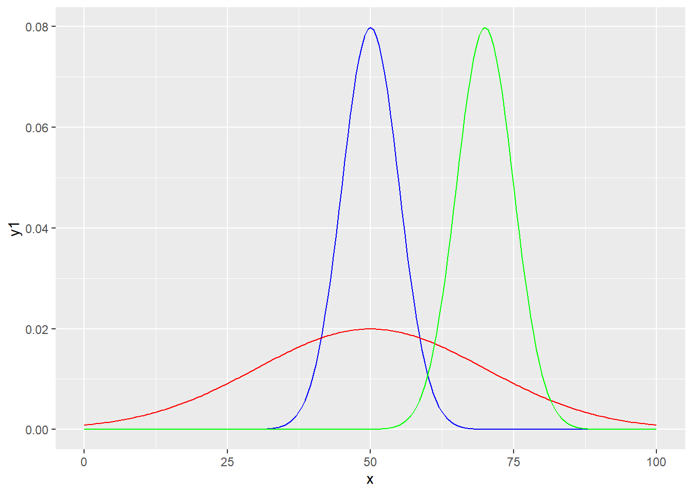

14 Razdiobe i simulacije
R se između ostalog definira kao jezik za “statističko programiranje” što znači da je jedna od njegovih osnovnih funkcija omogućiti provođenje statističkih analiza. Za razliku od drugih programskih jezika, za R se često kaže da je stvoren “od statističara, za statističare”, što znači da usprkos činjenici da je R kao jezik uvelike napredovao i evoluirao od svojih početaka kao izvedenice jezika S, statistika je i dalje u srži samog jezika a R kao takav sadrži iznimno bogatu podršku orijentiranu upravo statističarima i njihovim potrebama.
Cilj lekcije koja slijedi nije naučiti čitatelja statistiku. Budući da se radi o kompleksnom i relativno zahtjevnom znanstvenom polju za bilo kakav svrsishodan pregled trebalo bi daleko više prostora od onoga koji imamo ovdje na raspolaganju. Ideja lekcije jest primarno prikazati funkcije rada sa razdiobama, objasniti osnove provedbe simulacija te objasniti neke osnovne metode deskriptivne i inferencijalne statistike uz naglasak na njihovo provođenje kroz programski jezik R. Čitatelji koji nisu upoznati sa statistikom mogu lekciju koristiti kao prvi korak prema upoznavanju svijeta statistike, dok oni koji upravljaju znanjem barem osnovnih statističkih metoda mogu saznati kako neke poslove (koje su možda obavljali uz pomoć nekih drugih alata) mogu izvršavati programski uz pomoć podrške koju nudi jezik R.
Kao puno opsežniji uvod u statistiku snažno preporučujemo knjigu “OpenIntro Statistics” (Diez, Barr, and Çetinkaya-Rundel 2015). Važno je napomenuti da knjiga ima i svoj prateći CRAN paket, zvan ‘openintro’, koji omogućuje paralelno čitanje knjige i rješavanje zadanih problema direktno u R-u na istim podatkovnim skupovima koji se referenciraju u knjizi.
14.1 Rad sa razdiobama vjerojatnosti u jeziku R
U ovom dijelu lekcije prikazat ćemo podršku jezika R za rad sa različitim razdiobama vjerojatnosti. Važno je naglasiti da se ovdje nećemo baviti temeljitim pregledom teorije vezanim uz pojmove razdiobe vjerojatnosti diskretne i kontinuirane slučajne varijable (već spomenuti izvor “OpenIntro Statistics” može pružiti vrlo kvalitetan uvod ove tematike). Cilj lekcije koja slijedi primarno je prikazati što jezik R - ili konkretnije paket stats - nudi kao podršku za lak i učinkovit rad sa razdiobama.
Pojam razdiobe vjerojatnosti predstavlja funkciju koja opisuje vjerojatnost pojave nekog slučajnog događaja. Tako kod bacanja novčića imamo dva moguća ishoda - “pismo” ili “glava”, a ako je novčić regularan vjerojatnost pojedinog ishoda jest 0.5, tj. 50%. Zbroj brojeva kod bacanja dvije kockice može biti od 2 do 12, pri čemu svi ishodi nemaju istu vjerojatnost; npr. broj 7 ima najveću vjerojatnost (17%) dok 2 i 12 imaju najmanju (samo 3%).
Možemo razlikovati diskretne i kontinuirane razdiobe vjerojatnosti, u ovisnosti o tome da li je skup mogućih ishoda nekog slučajnog događaja konačan ili beskonačan (gdje pod “beskonačnosti” uglavnom mislimo na primanje vrijednosti iz beskonačnog skupa realnih brojeva).
Slika 14.1: Diskretna i kontinuirana razdioba
Kod diskretnih razdiobi uglavnom razmatramo vjerojatnost pojave nekog od ishoda, npr. ako slučajni događaj označimo sa slučajnom varijablom \(X\), a jedan od mogućih ishoda sa \(x\), onda nam funkcija razdiobe odgovara na pitanje koliko je:
\[P(X = x)\]
Ovu vjerojatnost možemo direktno očitati iz grafa funkcije razdiobe pogledom na vrijednost na y osi za odabrani ishod na x osi.
Za kontinuirane razdiobe ovo pitanje ne možemo postaviti, budući da je zbog beskonačnosti skupa ishoda vjerojatnost bilo kojeg ishoda jednaka nuli - drugim riječima, vrijednost na y osi ne odgovara vjerojatnosti određenog ishoda, zbog čega ovakvu funkciju i zovemo funkcija gustoće razdiobe, a ne funkcija razdiobe kao kod diskretnih slučajnih varijabli. Pitanje na koje možemo odgovoriti jest koja je vjerojanost da ishod bude unutar određenog intervala, npr. za slučajni događaj opisan varijablom \(X\) i vrijednosti \(a\) i \(b\) preko grafa gustoće razdiobe možemo pronaći:
\[P(a \lt X \lt b)\] i to na način da integriramo površinu ispod krivulje na intervalu \([a,b]\).
Postoji veliki broj razdioba vjerojatnosti koje nam mogu poslužiti u različitim scenarijima. Binomna razdioba opisuje vjerojatnost uočavanja nekog događaja u eksperimentu kojeg ponavljamo određeni broj puta (npr. vjerojatnost da u 10 bacanja novčića dobijemo pismo 8 puta). Geometrijska razdioba opisuje vjerojatnost broja ponavljanja nekog eksperimenta dok ne dočekamo neki ishod ishoda (npr. vjerojatnost da se prvo “pismo” pojavi tek u petom bacanju novčića). Konačno, možda najpoznatija razdioba je Gaussova ili normalna razdioba koja se često pojavljuje u prirodi i koju statističari vrlo često koriste za potrebe inferencijalne statistike.
Poznavanje funkcija za rad sa različitim razdiobama može nam uvelike pomoći u različitim scenarijima. Na sreću, ne moramo poznavati veliki broj razdiobi niti u detalje učiti matematičku podlogu svake od njih. Dovoljno je početi sa nekoliko osnovnih razdiobi (npr. normalna i uniformna) a potom polako širiti znanje o ostalim razdiobama kada se suočimo sa problemima gdje se one mogu pokazati korisnima. Jezik R nam ovdje prilično pomaže budući da koristi jedinstven predložak za podršku svim funkcijama razdiobe koje imamo na raspolaganju tako da kad naučimo upravljati podrškom za jednu razdiobu imamo kvalitetnu podlogu za korištenje bilo koje druge razdiobe, jednom kad se upoznamo s njenim specifičnostima i scenarijima uporabe.
Broj razdiobi koje imaju ugrađenu podršku u jeziku R je prilično velik. Popis razdiobi koje imamo na raspolaganju - ne računajući dodatne CRAN pakete! - možemo dobiti naredbom:
U pravilu za svaku raspodjelu imamo na raspolaganju četiri funkcije koje prate isti uzorak imenovanja - funkcije slijede naziv distribucije (npr. norm za normalnu razdiobu, unif za uniformnu, binom za binomnu i sl.). Ovom nazivu daje se prefiks od jednog slova kako slijedi:
d- za funkciju razdiobe tj. gustoće razdiobe- za diskretne slučajne varijable ova funkcija odgovara na pitanje koliko je \(P(X = x)\)
p- za kumulativnu funkciju razdiobe- odgovara na pitanje koliko je \(P(X \lt x)\)
q- za funkciju kvantila (inverz od funkcije razdiobe)- odgovara na pitanje koja se vrijednost nalazi na određenom postotku skupa teoretskih vrijednosti poredanih po veličini
r- za nasumično generiranje jedne ili više varijabli iz odabrane razdiobe
Svaka od ovih funkcija prima parametre specifične za njenu funkcionalnost (tako funkcija za nasumični odabir varijabli iz razdiobe prima parametar n koji joj daje informaciju broju slučajnih varijabli koje želimo generirati) te parametre specifične za tu razdiobu (tako sve funkcije za normalnu razdiobu primaju aritmetičku sredinu i standardnu devijaciju tj. parametre mean i sd, geometrijska razdioba traži vektor vjerojatnosti prob, a Poissonova parametar lambda).
14.2 Binomna razdioba
Za početak upoznajmo se sa binomnom razdiobom. Ovo je diskretna razdioba koja se naslanja na tzv. Bernoullijev eksperiment, tj. eksperiment koji ima samo dva moguća ishoda (pozitivni i negativni) pri čemu je vjerojatnost pozitivnog ishoda uvijek jednaka i iznosi neki broj \(p\) (u intervalu \([0,1]\)). Binomna razdioba odgovara na sljedeće pitanje:
“Ako \(n\) puta ponovimo Bernoullijev eksperiment sa vjerojatnosti pozitivnog ishoda \(p\), koja je vjerojatnost da dobijemo vjerojanost x?”
Odgovor možemo dobiti preko jednostavne kombinatorike:
\[P(brojIshoda = x;n, p) = {n\choose x}p^x(1-p)^{n-x}\]
Pomoćne funkcije mogu nam pomoći kod izračuna vrijednosti vezanih uz binomnu razdiobu. Imamo na raspolaganju sljedeće funkcije:
dbinom(x, size, prob)- vjerojatnost da ćemo pozitivni ishod dobiti
xputa usizeponavljanja ako je vjerojatnost pozitivnog ishodaprob xmože biti vektor (dobivamo vektor vjerojatnosti)
- vjerojatnost da ćemo pozitivni ishod dobiti
pbinom(q, size, prob)- vjerojatnost da ćemo pozitivni ishod dobiti
qputa ili manje usizeponavljanja ako je vjerojatnost pozitivnog ishodaprob
- vjerojatnost da ćemo pozitivni ishod dobiti
qbinom(p, size, prob)- vrijednost koja se nalazi na
p-tom kvantilu binomne razdiobe u kojoj imamosizeponavljanja i vjerojatnost pozitivnog ishodaprob
- vrijednost koja se nalazi na
Isprobajmo ih u sljedećem zadatku.
Zadatak 14.1 - Binomna razdioba
# koja je vjerojatnost da u 10 bacanja novčića vrijednost "pismo" dobijete točno jednom?
# koja je vjerojatnost da u 20 bacanja novčića broj dobivanja vrijednosti "pismo" bude manji ili jednak 10?
# koja je vrijednost prvog, drugog i trećeg kvartila u bacanju novčića 100 puta?
# nacrtajte funkciju razdiobe eksperimenta bacanja novčića 100 puta
## NAPUTAK: napravite pomoćni numerički vektor svih mogućih ishoda,
## konstruirajte podatkovni okvir sa potrebnim podacima a potom nacrtajte razdiobu
## na grafu odabrane geometrije (točkasta, linijska ili stupčasta)# koja je vjerojatnost da u 10 bacanja novčića vrijednost "pismo" dobijete točno jednom?
dbinom(x = 1, size = 10, prob = 0.5)
# koja je vjerojatnost da u 20 bacanja novčića broj dobivanja vrijednosti "pismo" bude manji ili jednak 10?
pbinom(q = 10, size = 20, prob = 0.5)
# koja je vrijednost prvog, drugog i trećeg kvartila u bacanju novčića 100 puta?
qbinom(p = c(0.25, 0.5, 0.75), size = 100, prob = 0.5)## [1] 0.009765625
## [1] 0.5880985
## [1] 47 50 53# nacrtajte funkciju razdiobe eksperimenta bacanja novčića 10 puta
## NAPUTAK: napravite pomoćni numerički vektor svih mogućih ishoda,
## konstruirajte podatkovni okvir sa potrebnim podacima a potom nacrtajte razdiobu
## na grafu odabrane geometrije (točkasta, linijska ili stupčasta)
data.frame(brojIshoda = 0:10, vjerojatnost = dbinom(0:10, 10, 0.5)) %>%
ggplot(aes(x = brojIshoda, y = vjerojatnost)) + geom_bar(stat = "identity") 14.3 Normalna razdioba
Normala razdioba je kontinuirana razdioba sa dva parametra - aritmetičkom sredinom mean i standardnom devijacijom sd. Funkcija gustoće razdiobe ima sljedeći oblik:
\[ f(x) = \frac{1}{\sigma\sqrt{2\pi}} \exp\left( -\frac{1}{2}\left(\frac{x-\mu}{\sigma}\right)^{\!2}\,\right)\]
Pomoćne funkcije za rad sa ovom funkcijom su sljedeće:
dnorm(x, mean = 0, sd = 1)- vrijednost funkcije gustoće razdiobe za vrijednost
xkod normalne razdiobe sa sredinommeani standardnom devijacijomsd
- vrijednost funkcije gustoće razdiobe za vrijednost
pnorm(q, mean = 0, sd = 1)- vrijednost kumulativne funkcije razdiobe za vrijednost
xkod normalne razdiobe sa sredinommeani standardnom devijacijomsd
- vrijednost kumulativne funkcije razdiobe za vrijednost
qnorm(p, mean = 0, sd = 1)- vrijednost koja se nalazi na
p-tom kvantilu kod normalne razdiobe sa sredinommeani standardnom devijacijomsd
- vrijednost koja se nalazi na
Osnovna razlika između normalne razdiobe (kao kontinuirane) i binomne (kao diskretne) jest da funkciju sa prefiksom d ne možemo koristiti za izračun vjerojatnosti konkretnog ishoda. Možemo računati vjerojatnost pripadnosti intervalu, za što koristimo funkciju sa prefiksom p. S druge strane funkciju sa prefiksom d možemo koristiti kada želimo vizualizirati samu funkciju gustoće razdiobe, budući da nam vraća vrijednosti koje mapiramo na os y.
Zadatak 14.2 - Normalna razdioba
# ako pretpostavimo normalnu razdiobu sa sredinom 50 i standardnom devijacijom 5, koja je vjerojatnost
# da će slučajno odabrana opservacija imati vrijednost između 55 i 65?
# koja se vrijednost nalazi na 1., 25., 50., 75. i 99.-om percentilu?
# na jednom grafu prikažite funkcije gustoće razdiobe sa sljedećim parametrima
# - sredina: 50, st.dev: 5 (plava linija)
# - sredina: 50, st.dev: 20 (crvena linija)
# - sredina: 70, st.dev: 5 (zelena linija)
#
## NAPUTAK: koristite trik s "pomoćnim vektorom" iz prethodnog zadatka
## na isti graf stavite tri geometrije sa redefinicijom y estetike# ako pretpostavimo normalnu razdiobu sa sredinom 50 i standardnom devijacijom 5, koja je vjerojatnost
# da će slučajno odabrana opservacija imati vrijednost između 55 i 65?
pnorm(65, 50, 5) - pnorm(55, 50, 5) ## [1] 0.1573054# koja se vrijednost nalazi na 1., 25., 50., 75. i 99.-om percentilu?
qnorm(c(0.01, 0.25, 0.50, 0.75, 0.99), 50, 25)## [1] -8.158697 33.137756 50.000000 66.862244 108.158697# n istom grafu prikažite funkcije gustoće razdiobe sa sljedećim parametrima
# - sredina: 50, st.dev: 5 (plava linija)
# - sredina: 50, st.dev: 20 (crvena linija)
# - sredina: 70, st.dev: 5 (zelena linija)
#
## NAPUTAK: koristite trik s "pomoćnim vektorom" iz prethodnog zadatka
## na isti graf stavite tri geometrije sa redefinicijom y estetike
x <- seq(0, 100, 0.5)
df <- data.frame(x = x, y1 = dnorm(x, 50, 5), y2 = dnorm(x, 50, 20), y3 = dnorm(x, 70, 5))
ggplot(df, aes(x = x)) + geom_line(aes(y = y1), color = "blue") +
geom_line(aes(y = y2), color = "red") + geom_line(aes(y = y3), color = "green") 
14.4 Generiranje nasumičnih opservacija
Jedna od najčešće korištenih obitelji funkcija vezanih uz razdiobe su funkcije za generiranje nasumičnih opservacija koje odgovaraju zadanoj razdiobi. Kako je već spomenute, sve ove funkcije počinju slovom r (od eng. random) te nizom znakova koji označavaju naziv razdiobe. Dodatni parametri funkcije ovise o korištenoj razdiobi, a mogu se pronaći u dokumentaciji.
Svako pokretanje
Zadatak 14.3 - Generiranje nasumičnih opservacija iz odabrane razdiobe
set.seed(1237) # za potrebe ponovljivosti
# generirajte 1000 opservacija koje odgovaraju broju pozitivnih ishoda
# kod 100 ponavljanja Bernoullijevog eksperimenta sa vjerojatnosti
# pozitivnog ishoda od 0.2
# generirajte 1000 opservacija koje odgovaraju normalnoj razdiobi
# sa srednjom vrijednosti 20 i standardnom devijacijom 4
# na istom grafu nacrtajte histograme oba skupa opservacija
# (sami odaberite prikladnu širinu ladice)set.seed(1237) # za potrebe ponovljivosti
# generirajte 1000 opservacija koje odgovaraju broju pozitivnih ishoda
# kod 100 ponavljanja Bernoullijevog eksperimenta sa vjerojatnosti
# pozitivnog ishoda od 0.2
x1 <- rbinom(1000, 100, 0.2)
# generirajte 1000 opservacija koje odgovaraju normalnoj razdiobi
# sa srednjom vrijednosti 20 i standardnom devijacijom 4
x2 <- rnorm(1000, 20, 4)
# na istom grafu nacrtajte histograme oba skupa opservacija
# (sami odaberite prikladnu širinu ladice)
data.frame(x1 = x1, x2 = x2) %>% ggplot(aes(x = x1)) + geom_histogram(fill = 'blue', alpha = 0.5, bins = 30) +
geom_histogram(aes(x = x2), fill = 'orange', alpha = 0.5, bins = 30)14.5 Procjenu funkcije gustoće razdiobe i kvantil-kvantil graf
Kada radimo sa realnim podacima kontinuiranog tipa, često želimo provjeriti odgovaraju li oni nekoj normalnoj razdiobi. Jedan od načina kako ovo izvesti jest uz pomoć histograma koje smo već spominjali u poglavlju o vizualizaciji te kojima ćemo se vratiti u poglavlju o deskriptivnoj statistici. Drugi način jest koristiti funkciju geom_density paketa ggplot2 koja će uz pomoć posebnog algoritma pokušati “pogoditi” funkciju razdiobe te ju vizualizirati na grafu.
Prikažimo kako uz pomoć spomenute funkcije vizualno provjeriti da li se skup vrijednosti nekih obzervacija ravna po nekoj normalnoj razdiobi.
Zadatak 14.4 - Funkcija geom_density
# učitajte podatke iz datoteke "podaci.csv" i prikažite izgled
# procjenjene funkcije razdiobe za svaki od stupaca
# komentirajte izgled tj. prirodu prikazanih razdiobidf <- read_csv("podaci.csv", show_col_types = F)
# grafove ćemo složiti u 2 x 2 matricu radi bolje preglednosti
g1 <- ggplot(df, aes(x1)) + geom_density() + labs(x = "", title = "Normalna") + xlim(c(160, 180))
g2 <- ggplot(df, aes(x2)) + geom_density() + labs(x = "", title = "Lijevo nagnuta") + xlim(c(170, 176))
g3 <- ggplot(df, aes(x3))+ geom_density() + labs(x = "", title = "Desno nagnuta") + xlim(c(160, 170))
g4 <- ggplot(df, aes(x4)) + geom_density() + labs(x = "", title = "Bimodalna") + xlim(c(90, 190))
grid.arrange(g1, g2, g3, g4, nrow = 2, ncol = 2)Za provjeru normalnosti razdiobe odabrane varijable često se koristi i tzv. “QQ graf” (od engl. quantile-quantile). Ovaj graf radi na sljedeći način: opservacije se poredaju na jednu os prema svojoj vrijednosti dok na drugu os stavljamo njihovu očekivanu Z-vrijednost (engl. Z-score) koji predstavlja “udaljenost od sredine po broju standardnih devijacija”). Kod normalne razdiobe QQ graf leži na dijagonali grafa, dok se odstupanje od normalne razdiobe očituje u “izvijenosti” grafa tj. odstupanju od “pravca normalnosti”.
Funkcija geometrije geom_qq uz definiranu estetiku sample nam omogućuje jednostavno stvaranje QQ grafa odabrane varijable.
Zadatak 14.5 - Funkcija geom_qq
#library(gridExtras) # ukoliko je potrebno
g1 <- ggplot(df, aes(sample = x1)) + geom_qq() + labs(title = "Normalna")
g2 <- ggplot(df, aes(sample = x2)) + geom_qq() + labs(title = "Lijevo nagnuta")
g3 <- ggplot(df, aes(sample = x3)) + geom_qq() + labs(title = "Desno nagnuta")
g4 <- ggplot(df, aes(sample = x4)) + geom_qq() + labs(title = "Bimodalna")
grid.arrange(g1, g2, g3, g4, nrow = 2, ncol = 2)Ovdje završavamo priču o razdiobama. Ponovimo da prikazane funkcije imaju svoje korespondentne alternative za niz drugih razdiobi, pa tako npr. Poissonova razdioba ima funkcije dpois, ppois, qpois i rpois s kojima radimo vrlo slično prikazanim metodama normalne razdiobe, vodeći naravno računa o specifičnostima odabrane razdiobe (kao što smo već rekli, Poissonova razdioba očekivano nema parametre mean i sd već samo parametar lambda).
14.6 Monte Carlo Simulacije
Pojam “Monte Carlo simulacije” označava klasu računalnih algoritama gdje provodimo višestruko uzorkovanje te na osnovu dobivenih rezultata donosimo određene zaključke (npr. o radziobi nekog slučajnog događaja). Ovaj način modeliranja slučajnih događaja često se koristi kad želimo zaobići (ili provjeriti valjanost) matematičkog modela.
Za provedbu Monte Carlo simulacija možemo koristiti funkcije upoznate u prethodnom poglavlju te već upoznatu funkciju sample.
gdje je x vektor iz kojeg odabiremo vrijednosti, size broj vrijednosti koje želimo odabrati, replace zastavica koja opisuje da li se vrijednosti mogu ponavljati te konačno vektor probs pomoću kojeg zadajemo vjerojatnosti odabira pojedinih elemenata. Po default-u svi elementi imaju jednake vjerojatnosti, a ukoliko koristimo ovaj parametar moramo voditi računa da broj elemenata odgovara broju elemenata originalnog vektora; vjerojatnosti ne moraju imati zbroj 1 budući da će ih R skalirati prije uporabe (tako da ih više možemo tretirati kao “težine”).
Podsjetimo se kako radi sample funkcija na vrlo jednostavnom primjeru Monte Carlo simulacije bacanja novčića.
Zadatak 14.6 - Funkcija sample
set.seed(1234)
# napišite funkciju `baciNovcic(n)` koja će vratiti vektor duljine `n` sa nasumično
# odabranim vrijednostima 0 (pismo) i 1 (glava)
# bacite novčić 10, 100, 1000 i 100,000 puta te ispišite postotak slučajeva kada je ispala "glava"baciNovcic <- function(n)
sample(c(0,1), n, replace = T)
baciNovcic(10) %>% mean
baciNovcic(100) %>% mean
baciNovcic(1000) %>% mean
baciNovcic(100000) %>% mean## [1] 0.6
## [1] 0.55
## [1] 0.473
## [1] 0.50207Na sličan način možemo provjeriti kolika je vjerojatnost pojedinog zbroja kod bacanja dvije kockice. Ovdje nam nije dosta jedan poziv funkcije sample, već trebamo zbroj dva poziva te funkcije kojeg ćemo računati velikih broj puta. Jedno od mogućih rješenja kako ovo isprogramirati jest uz pomoć petlje, no budući da znamo kako je u jeziku R poželjno izbjeći petlje ukoliko je to moguće, preporučljivije je koristiti funkciju replicate:
Ova funkcija uzima izraz expr i ponavlja ga n puta, pri čemu slaže međurezultate u prikladnu strukturu (ukoliko pogledamo dokumentaciju, uvidjet ćemo da je ova funkcija zapravo izvedenica funkcije sapply).
Zadatak 14.7 - funkcija replicate
set.seed(1234)
# napravite funkciju `baci2kockice(n)` koja vraća vektor od n elemenata
# gdje je svaki element zbroj rezultata jednog bacanja dvije kockice
# ispišite vjerojatnosti svakog mogućeg zbroja za 100, 1000 i 1,000,000 bacanja kockicebaci2kockice <- function(n)
replicate(n, sample(1:6, 1) + sample(1:6, 1))
table(baci2kockice(100)) / 100
table(baci2kockice(1000)) / 1000
round(table(baci2kockice(1000000)) / 1000000, 3)##
## 2 3 4 5 6 7 8 9 10 11 12
## 0.02 0.04 0.08 0.09 0.15 0.17 0.17 0.12 0.05 0.07 0.04
##
## 2 3 4 5 6 7 8 9 10 11 12
## 0.023 0.051 0.082 0.119 0.130 0.152 0.132 0.132 0.086 0.056 0.037
##
## 2 3 4 5 6 7 8 9 10 11 12
## 0.028 0.056 0.083 0.111 0.139 0.167 0.139 0.111 0.083 0.056 0.028Zadatak 14.8 - funkcija replicate (2)
set.seed(1234)
# igra "belot" se igra sa mađarskim kartama - 32 karte u 4 različite boje
# svaki igrač dobiva po 8 karata
# jedan od rijetkih događaja u igri je zvanje "belot" kod kojeg (barem) jedan od igrača
# dobije sve karte jednake boje
# simulacijom procijenite vjerojatnost ovog događajaset.seed(1234)
# zanimaju me samo boje
spil <- c(rep(1, 8), rep(2, 8), rep(3, 8), rep(4, 8))
belotExp <- function() {
spil <- sample(spil, 32) # mijesanje
# prvi igrač dobija karte od 1 do 8, drugi od 9 do 16 itd.
zvanjeBelot <- (length(unique(spil[1:8])) == 1) || (length(unique(spil[9:16])) == 1) ||
(length(unique(spil[17:24])) == 1) || (length(unique(spil[25:32])) == 1)
zvanjeBelot
}
replicate(1000000, belotExp()) %>% sum # sum umjesto mean radi lakše interpretacije## [1] 3Ponekad želimo imati zapis svih provedenih simulacija. Npr. recimo da želimo 1000 puta ponoviti simulaciju bacanja kockice 100 puta te da sve rezultate želimo imati trajno pohranjene kako bi nad njima mogli raditi različite izračune. Za ovo nam je pogodno koristiti matricu dimenzija 1000 x 100 gdje svaki redak predstavlja jednu simulaciju od 100 bacanja.
Već smo prikazali funkciju replicate koja će u slučaju da dani izraz expr vraća jednu vrijednost kao konačni rezultat vratiti vektor. Ukoliko expr vraća vektor konzistentne duljine replicate će vratiti matricu. Potencijalni problem nam može predstavljati činjenica da će replicate rezultate poredati “po stupcima”, tako da je uputno njezin rezultat prije daljnjeg korištenja transponirati uz pomoć funkcije t.
Zadatak 14.9 - matrica kao rezultat funkcije replicate
set.seed(1234)
# 1000 puta ponovite simulaciju bacanja kockice 100 puta
# rezultate pohranite u varijablu `rez`
# koristite funkciju `replicate` čiji rezultat ćete transponirati
# budite oprezni ako koristite ternarni operator (razmislite zašto!)Zadatak 14.10 - vizualizacija rezultata simulacije
# nacrtajte razdiobu suma bacanja dobivenih u simulacijama pohranjenim u varijabli `rez`
# za računanje sumi koristite funkciju `apply` ili `rowSums`
# u varijablu `prosjSum` upišite prosječnu sumu zaokruženu na 2 decimale
# za crtanje razdiobe koristite `ggplot` i `geom_density`
# dodajte crvenu vertikalnu liniju na sredini uz pomoć fukcije `geom_vline`
# (estetika `xintercept` postavljena na `prosjSum`)
# i iznos sredine crvene boje uz pomoć funkcije `geom_text`
# ( parametar `label` postavljen na `prosjSum`, parametri `x` i `y` uz liniju)U ovome dijelu saznali smo neke osnovne alate jezika R za provođenje simulacija:
- kod simulacija se uglavnom koristimo funkcijom
samplete funkcijama razdiobi sa prefiksomr - funkcija
replicateje vrlo korisna za ponavljanje velikog broja simulacija i pomaže nam da izbjegnemo korištenje petlje (iako i petlje mogu biti korisne i ne treba ih u potpunosti zanemariti) - matematičke metode te
dipfunkcije razdiobi nam često mogu pomoći kod izračuna i ocjene vjerojatnosti dobivene simulacijom
Simulacijama ćemo se vratiti u poglavlju o inferencijalnoj statistici, budući da one predstavljaju jednu od metoda provjere koliko je neka uočena pojava “vjerojatna” ako pretpostavimo da pripada određenoj razdiobi. Za više informacija o simulacijama te njihovoj uporabi za potrebe statistike možemo preporučiti knjigu “IntroStat with Randomization and Simulation” koja je otvoreno dostupna na ovoj poveznici. Ova knjiga okvirno prolazi kroz iste teme kao i knjiga “OpenIntro Statistics”, no s većim naglaskom na simulacije i korištenje nasumično odabranih vrijednosti uz pomoć jezika R.
Zadaci za vježbu
Procijenite vjerojatnost dobivanja 4 asa u pokeru, pri čemu pretpostavljate da će igrač prvo vući 5 karata, a potom odbaciti sve karte koje nisu asevi i ponovo vući toliko karata (simulirajte 100,000 ovakvih postupaka i ispišite konačnu vjerojatnost).
Jedan od stožernih teorema statistike je “centralni granični teorem” koji (pojednostavljeno rečeno) kaže da će se sredine uzoraka određene veličine ponašati po normalnoj razdiobi u kojoj je sredina jednaka sredini originalne razdiobe populacije a varijanca jednaka varijanci populacije podijeljenoj sa veličinom uzorka.
Simulacijom dokažite ovu tvrdnju. Ponovite 1000 puta eksperiment nasumičnog uzorkovanja 100 mjera iz normalne razdiobe sa sredinom 50 i standardnom devijacijom 10 (rezultate pohranite u matricu 1000 x 100, svaki redak predstavlja jedno provedeno uzorkovanje). Potom na istom grafu nacrtajte histogram svih 10,000 mjera i histogram aritmetičkih sredina svakog pojedinog uzorkovanja (tj. histogram 1000 dobivenih sredina svakog uzorkovanja).

Programirajmo u R-u by Damir Pintar is licensed under a Creative Commons Attribution-NonCommercial-NoDerivatives 4.0 International License.
Based on a work at https://ratnip.github.io/FER_OPJR/